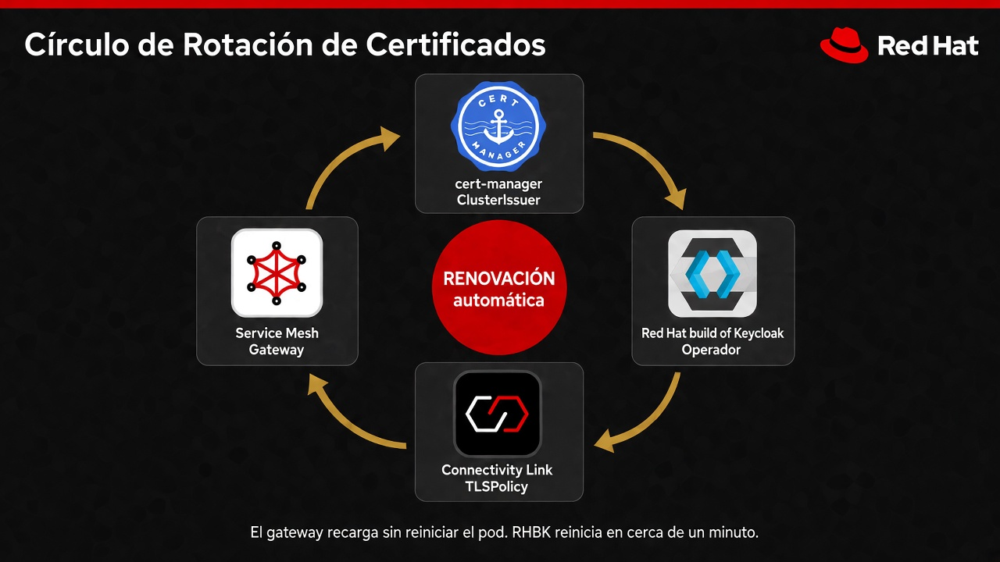

cert-manager + Connectivity Link + Service Mesh — ciclo de vida TLS completamente automatizado para Red Hat Build of Keycloak y todas las aplicaciones del clúster.
Gestionar certificados TLS manualmente para proveedores de identidad y APIs es operativamente frágil:
los certificados vencidos provocan interrupciones del servicio, y rotarlos a mano en múltiples componentes
es propenso a errores. rhbk-cert elimina ese problema con un
Validated Pattern GitOps que provisiona cert-manager,
configura un ClusterIssuer (ACME o CA interna) y conecta la renovación automática de
certificados tanto al Gateway de Service Mesh (vía TLSPolicy de Connectivity Link) como al
Operador RHBK (vía spec.http.tlsSecret).
Los certificados se renuevan antes de vencer. Sin intervención humana. Replicable para N aplicaciones.
Neuralbank es el cliente de ejemplo de RHBK. El chart neuralbank despliega
el frontend, la API y la base en neuralbank-stack. El Gateway envía / al
frontend y /api a la API. Una AuthPolicy de Connectivity Link valida el JWT del realm
neuralbank de RHBK en la API. Cualquier otro cliente puede usar el mismo Gateway.
Emite y renueva certificados TLS desde ACME (Let's Encrypt) o una CA interna. Soporta Route53, Cloudflare, Azure DNS, Google Cloud DNS y ACME DNS.
El operador RHBK monitorea el Secret TLS referenciado. Cuando cert-manager lo renueva, RHBK reinicia automáticamente para cargar el nuevo certificado.
Vinculada al Gateway de Service Mesh, TLSPolicy delega el ciclo de vida del certificado a cert-manager. El Gateway recarga el certificado renovado sin reiniciar el pod.
Todos los recursos — ClusterIssuer, TLSPolicy, Gateway, CR de Keycloak — están declarados en Git y reconciliados continuamente por ArgoCD. La deriva de configuración es imposible.
Las credenciales del proveedor DNS y los secretos de administración de Keycloak se almacenan en HashiCorp Vault. External Secrets Operator los inyecta como Kubernetes Secrets — nunca en Git.
Agregar una nueva aplicación solo requiere un HTTPRoute que apunte al Gateway existente. El ClusterIssuer y TLSPolicy ya la cubren. Cero configuración de certificados adicional.
El círculo de rotación funciona completamente dentro del clúster. Una vez inicializado, la renovación de certificados no requiere acción externa.

Todos los operadores provienen del Catálogo Oficial de Red Hat (redhat-operators). No se requieren catálogos de terceros.
| Operador | Canal | Propósito |
|---|---|---|
| Red Hat OpenShift GitOps | stable | ArgoCD — motor GitOps para todos los recursos |
| cert-manager para OpenShift | stable-v1 | Emisión y renovación automática de certificados |
| External Secrets Operator | stable-v1 | Extrae secretos de Vault a Kubernetes |
| Red Hat OpenShift Service Mesh 3 | stable-3.2 | Gateway API de la malla. Validado con el operador 3.2.11 en el canal stable-3.2. |
| Red Hat Connectivity Link | stable | TLSPolicy, AuthPolicy y RateLimitPolicy. Validado con el operador 1.4.3 en el canal stable. |
| Red Hat Build of Keycloak | stable-v26.4 | Proveedor de identidad OIDC con integración TLS Secret |
Establece acme.provider en values-secret.yaml para seleccionar tu proveedor DNS. Para clústeres internos o air-gapped, usa selfSigned.enabled: true.
| Proveedor | acme.provider | Clave del Secret |
|---|---|---|
| AWS Route 53 | route53 | secret-access-key |
| Cloudflare | cloudflare | api-token |
| Azure DNS | azure | client-secret |
| Google Cloud DNS | google | key.json |
| ACME DNS (auto-hospedado) | acmedns | acmedns.json |
| Recurso | Mínimo | Recomendado |
|---|---|---|
| Versión OCP | 4.19 | 4.20 |
| Nodos de control | 3 × 4 vCPU / 16 GB RAM | 3 × 8 vCPU / 32 GB RAM |
| Nodos worker | 3 × 8 vCPU / 32 GB RAM | 3 × 16 vCPU / 64 GB RAM |
| Clase de almacenamiento | RWO, 50 GB/worker | RWO, 100 GB/worker |
| DNS | Wildcard *.apps.<dominio> → LB | Igual |
| Catálogo OCP | redhat-operators accesible | Igual |
OpenShift 4.19 es el mínimo porque es la primera versión en la que Red Hat Connectivity Link y OpenShift Service Mesh 3 están soportados. 4.20 es la versión recomendada.
# Clonar y configurar
git clone https://github.com/maximilianoPizarro/rhbk-cert.git
cd rhbk-cert
cp values-secret.yaml.template values-secret.yaml
# Editar values-secret.yaml: completar credenciales de Keycloak y DNS
# Desplegar
make install
make install instala el Validated Patterns Operator (si no está presente), carga los secretos en Vault
y aplica el Pattern CR. Ejecute scripts/preflight.sh antes de make install. Argo CD sincroniza GitOps, Vault y External Secrets, Service Mesh, cert-manager, RHBK y el gateway, en ese orden de aplicaciones.
Monitorear el progreso: oc get applications -n vp-gitops
Cuando Argo CD marca las aplicaciones como Synced, confirme los certificados y el borde antes de dar la instalación por terminada.
oc get certificate -A
oc describe certificate rhbk-tls -n keycloak-system
oc get clusterissuer
oc get tlspolicy -A
openssl s_client -connect rhbk.apps.<dominio-del-cluster>:443 -servername rhbk.apps.<dominio-del-cluster> </dev/null 2>/dev/null | openssl x509 -noout -datesReady: True en el Certificate y un notAfter a unos 90 días indican que la emisión funcionó. Programmed: True en el Gateway indica que el listener de Service Mesh está sirviendo.
oc describe challenge -A. El Secret de DNS tiene que existir en cert-manager y la zona tiene que ser la autoridad del dominio apps del clúster.acme.staging en true, espere un certificado Ready y vuelva a false. Los certificados de staging no son de confianza pública.SecretSynced aunque el proveedor rechace el token.*.apps, o un hostedZoneID de otra cuenta, se queda en Pending hasta el plazo.oc describe certificate indica el issuer, el order y la condición que falla. Un issuer inexistente significa que global.certificateIssuer no coincide con un issuer Ready.oc get gateway -n neuralbank-stack no está Programmed, corrija la clase de gateway de Service Mesh antes de depurar la policy.cmctl renew rhbk-tls -n keycloak-system pide a cert-manager que reemita. Sin cmctl, borre el Secret. El objeto Certificate lo vuelve a crear:
oc delete secret rhbk-tls-secret -n keycloak-systemLo mismo vale para neuralbank-gateway-tls en neuralbank-stack. No borre el objeto Certificate.
Los charts usan una vida de 90 días y renuevan 15 días antes del vencimiento. Let's Encrypt no emite más de 90 días, así que 2160h coincide con la CA pública. Use 720h si quiere que la renovación empiece 30 días antes.
| Ajuste | Valor del chart | Significado |
|---|---|---|
rhbkCertificate.duration | 2160h | 90 días, certificado de RHBK |
rhbkCertificate.renewBefore | 360h | 15 días antes del vencimiento |
tlsPolicy.duration | 2160h | 90 días, certificado del gateway |
tlsPolicy.renewBefore | 360h | 15 días antes del vencimiento |
renewBefore tiene que ser menor que duration. Para cambiarlo en un clúster, agregue un override de aplicación en values-hub.yaml sobre rhbkCertificate.renewBefore y tlsPolicy.renewBefore.
Los certificados de Let's Encrypt ya son de confianza para los navegadores y para el ingress de OpenShift. Una CA propia no lo es. Active selfSigned.enabled y desactive acme.enabled a la vez. El chart crea el Secret rhbk-cert-ca en cert-manager y un ClusterIssuer que también se llama letsencrypt-prod. Dejar ACME activo al mismo tiempo produce dos issuers con ese nombre.
oc get secret rhbk-cert-ca -n cert-manager -o jsonpath='{.data.ca\.crt}' | base64 -d > ca.crtDistribuya ca.crt a cada cliente que llame a RHBK o al gateway. El navegador lo necesita en su almacén de confianza. Una carga en el clúster que llame a RHBK por HTTPS tiene que montarlo y usarlo como SSL_CERT_FILE, o incorporarlo al trust store de la imagen.
El Keycloak de este patrón no configura un truststore. Para que RHBK confíe en esa CA en el TLS de salida, agregue un truststore que apunte a un Secret con la CA. El chart no lo hace solo:
spec:
truststores:
rhbk-cert-ca:
secret:
name: rhbk-cert-caLos certificados rotan. El token DNS no. Una access key de Route 53 o un token de Cloudflare caduca, y el síntoma es un challenge Pending, no un ExternalSecret fallido.
El solver de Route 53 de este chart lee secret-access-key del Secret dns-credentials. No escribe accessKeyID en el ClusterIssuer. La clave del Secret es la que indica acme.route53.credentialsSecretKey.
Acciones mínimas de Route 53, las mismas que documenta charts/all/cert-manager-config/values.yaml:
{
"Version": "2012-10-17",
"Statement": [{
"Effect": "Allow",
"Action": [
"route53:GetChange",
"route53:ChangeResourceRecordSets",
"route53:ListHostedZonesByName"
],
"Resource": "*"
}]
}Defina acme.route53.hostedZoneID si la cuenta ve más de una zona. Un token de Cloudflare necesita Zone DNS Edit sobre la zona del dominio apps. Rote la credencial en Vault, en la ruta que ya lee el ExternalSecret. El refresco es de una hora:
vault kv put secret/hub/dns-credentials secret-access-key=<clave-nueva>Para no esperar la hora: oc annotate externalsecret dns-credentials -n cert-manager force-sync=$(date +%s) --overwrite.
cert-manager expone certmanager_certificate_expiration_timestamp_seconds y certmanager_certificate_ready_status. El monitoreo de cargas de usuario de OpenShift las recoge cuando está habilitado en openshift-user-workload-monitoring.
La PrometheusRule se renderiza solo si monitoring.enabled es true en cert-manager-config. El default es false porque este patrón no instala los CRD de monitoreo. La regla avisa cuando falta menos de 14 días para el vencimiento, o cuando certmanager_certificate_ready_status permanece en 0 durante 15 minutos. El enrutamiento es el Alertmanager que ya tenga el clúster. El ejemplo etiqueta severity: warning.
El Gateway de Service Mesh termina TLS en el listener. OpenShift 4.17 y posterior usa TLS 1.2 como mínimo en el ingress. No agregue un listener que permita TLS 1.0 o 1.1. El Gateway de este patrón usa mode: Terminate y no baja ese piso.
Solo el controlador de cert-manager debe aprobar CertificateRequests. El ClusterIssuer es de alcance de clúster. No entregue el verbo approve de cert-manager.io a los equipos de aplicación.
Los charts no instalan NetworkPolicies. Una policy que corte la salida de cert-manager hacia el API de DNS, o el tráfico del Gateway hacia el Service, frena la emisión o el tráfico. Agregue policies cuando el círculo ya esté Ready, y permita la salida de cert-manager hacia el proveedor DNS y hacia Let's Encrypt.
values-secret.yaml ya está en .gitignore. Versione solo values-secret.yaml.template. Un secreto que entró en el historial de Git hay que rotarlo en Vault y en el usuario IAM, no alcanza con borrarlo en un commit posterior.
Validado el 20 de noviembre de 2026 en un sandbox de OpenShift 4.22. Los canales son suscripciones, no un CSV fijado. Un CSV posterior del mismo canal no formó parte de esa corrida.
| Componente | Probado | Canal |
|---|---|---|
| OpenShift | 4.22.22 | clúster |
| OpenShift GitOps | 1.22.3 | gitops-1.22 |
| cert-manager Operator for Red Hat OpenShift | 1.20.1 | stable-v1 |
| External Secrets Operator | 1.2.1 | stable-v1 |
| Red Hat OpenShift Service Mesh | 3.2.11 | stable-3.2 |
| Red Hat Connectivity Link | 1.4.3 | stable |
| Red Hat build of Keycloak | 26.4.18 | stable-v26.4 |
El reinicio automático de RHBK al cambiar el Secret TLS se observó con rhbk-operator.v26.4.18-opr.1 en ese clúster, con keycloak.instances: 1. La cifra de cerca de un minuto es esa observación, no una garantía para cada build posterior del operador.
make uninstall ejecuta el rol de desinstalación de Validated Patterns. Upstream lo marca como experimental. Quita los recursos del Pattern que creó. No revoca un certificado en Let's Encrypt y no vacía Vault.
Actualice integrando en main. La Application del hub sigue esa rama. Espere a que oc get applications -n vp-gitops vuelva a Synced.
Vuelva atrás fijando targetRevision del Pattern en el commit anterior, o revirtiendo el commit en Git. Argo CD renderiza el chart viejo. Este patrón no respalda los Secrets de certificado. cert-manager los reemite desde el objeto Certificate mientras el issuer y las credenciales DNS sigan sirviendo. Un Secret borrado vuelve. Un Certificate borrado no vuelve hasta que Git restaure el objeto.
El default es una instancia de RHBK. El operador recrea el pod cuando cambia rhbk-tls-secret, y con una réplica eso es un corte de cerca de un minuto en la versión que se probó. Defina keycloak.instances en 2 o más. El chart crea entonces un PodDisruptionBudget rhbk con minAvailable: 1, selector app.kubernetes.io/instance: rhbk. Postgres en este patrón sigue siendo una sola réplica. La base no es de alta disponibilidad.
Let's Encrypt y los API públicos de DNS no están alcanzables. Use selfSigned.enabled: true y distribuya la CA, como en la sección de confianza. La descarga de operadores igual necesita un índice de catálogo replicado.
El hostname del Gateway es *.<dominio del clúster>, así que un certificado cubre las aplicaciones de ese Gateway. RHBK usa su propio certificado, rhbk.<dominio del clúster>. Un host fuera de ese comodín necesita su propio Certificate o su propia TLSPolicy.
El patrón trae un solo cluster group de hub. Otro clúster necesita su propio Pattern CR, su propio issuer y su propia copia de las credenciales DNS. Este repositorio no reparte un certificado a varios clústeres.
Neuralbank es el cliente de ejemplo de RHBK y lo despliega el chart charts/all/neuralbank. El frontend se abre en https://neuralbank.<dominio del clúster>/. Connectivity Link valida el JWT de RHBK solo en /api. El usuario de prueba está en el Secret neuralbank-user de neuralbank-stack. Otro cliente puede adjuntar su propio HTTPRoute a neuralbank-gateway.
El ejemplo usa neuralbank-stack, el namespace del cliente de ejemplo de RHBK.
El ClusterIssuer y la TLSPolicy del Gateway existente
cubren automáticamente todos los HTTPRoutes que se le adjunten — sin configuración de certificados adicional.
apiVersion: gateway.networking.k8s.io/v1
kind: HTTPRoute
metadata:
name: mi-nueva-app
namespace: neuralbank-stack
spec:
parentRefs:
- name: neuralbank-gateway
namespace: neuralbank-stack
hostnames:
- mi-nueva-app.apps.cluster.ejemplo.com
rules:
- backendRefs:
- name: mi-nueva-app
port: 8080
Para agregar protección OIDC, adjunte una AuthPolicy (kuadrant.io/v1, el grupo de API que entrega Connectivity Link) que referencie el realm RHBK existente. No hace falta cambiar el certificado.